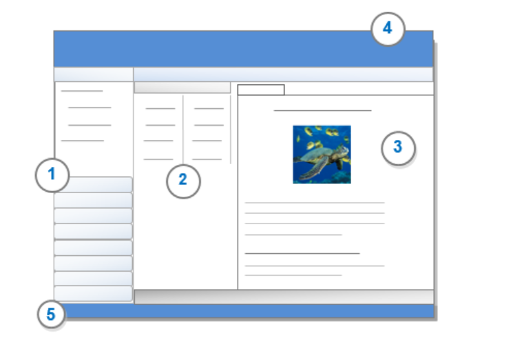

NVIVO Quick Start
A powerful software for the qualitative and mixed-methods analysis
What is NVivo?
NVivo is a software program used for qualitative and mixed-methods research. Specifically, it is used for the analysis of unstructured text, audio, video, and image data, including (but not limited to) interviews, focus groups, surveys, social media, and journal articles. It is produced by QSR International. As of July 2014, it is available for both Windows and Macintosh operating systems.
Why use NVivo?
Analyze and organize unstructured text, audio, video, or image data.
Playback ability for audio and video files, so that interviews can be transcribed in NVivo.
Ability to capture social media data from Facebook and Twitter using the NCapture browser plug-in.
Import notes and captures from Evernote - great for field research.
Import citations from EndNote, Mendeley, or other bibliographic management software - great for literature reviews.
Perform simple text analysis queries for text data in English, French, German, Spanish, Japanese, and Chinese.
How to get access to it?
You may login to the website https://www.qsrinternational.com/nvivo-qualitative-data-analysis-software/home where you can download the software and get access to it. You may also get a 14-day free trial on the website.
How to find your way around the workpalce?
1 Navigation View gives you access to items in your project.
2 List View displays the contents of the folder you have selected in Navigation View.
3 Detail View displays the content of your project item when you open it. This might be a file, node reference or visualization.
4 The Menu bar lets you navigate your project and access key features
5 The Status bar displays contextual information that varies depending on what you are doing in your project.
How to understand the key terms?
Learning the language of NVivo can be challenging. What is a node? What is a file? What is coding?
Get to grips with the words and key terms used in the interface.